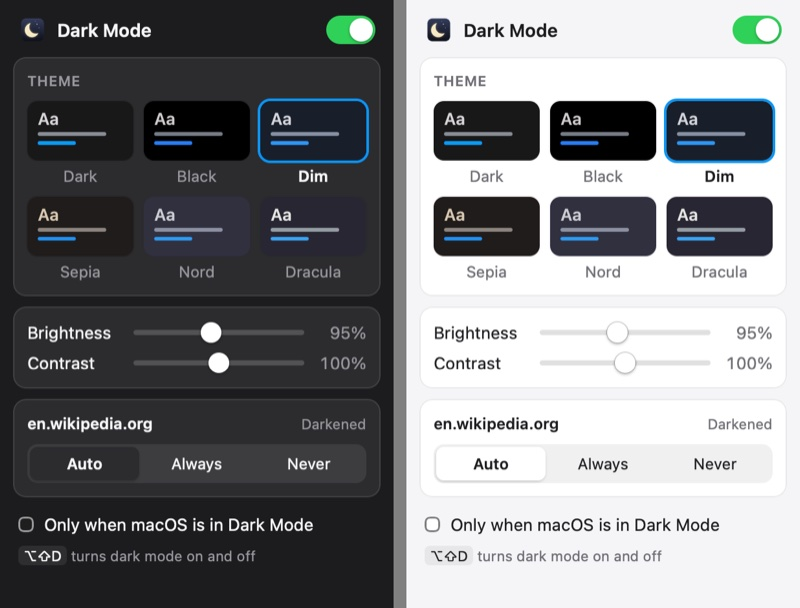

← All projects
Browser add-on ·: built and installed start to finish
Dark mode for any website in Safari
6themes, each tuned by a program to its target colors
≤ 0.9biggest color error in any theme (ΔE in OKLab, a measure of color difference)
1permission: storage only, no internet access
- Problem
- Many websites have no dark mode. The usual fix rewrites the look of every page. That is a big job, and the bright page can flash up first.
- Result
- A finished add-on with 6 themes, each within 0.9 of its target colors on a standard 0-to-100 color-difference scale. It has brightness and contrast sliders, settings for each site, a keyboard shortcut and an option to follow the Mac’s dark mode. Version 1.0.0 is built, signed and installed by one script, without Xcode. It asks for 1 permission: storage.
Added . Last changed .
- Problem
- Many websites have no dark mode. The usual fix rewrites the look of every page. That is a big job, and the bright page can flash up first.
- Built
- An add-on for Safari, the Mac’s web browser. It turns light websites dark in six color themes and leaves sites that are already dark alone. Photos keep their real colors.
- My rules
- One filter, not a rewrite of every page
- Themes tuned by a program, not by eye
- Photos keep their real colors
- AI wrote
- the code
- I tested
- Shown in Safari’s engine with the add-on running
- Version 1.0.0 builds, signs and installs
- Now
- A finished add-on with 6 themes, each within 0.9 of its target colors on a standard 0-to-100 color-difference scale. It has brightness and contrast sliders, settings for each site, a keyboard shortcut and an option to follow the Mac’s dark mode. Version 1.0.0 is built, signed and installed by one script, without Xcode. It asks for 1 permission: storage.
Read the script
An add-on for Safari, the Mac’s web browser, turns light websites dark, and leaves dark ones alone. Many websites have no dark mode, and the usual fix can flash the bright page first. One filter covers the whole page. Photos keep their real colors. Dark sites are left alone. 6 themes, each within 0.9 of its target colors, on a 0 to 100 scale. It asks for 1 permission: storage, with no internet access. Version 1.0.0 is finished, and installed by one script. Light sites go dark, and photos stay true. Details and code are below.
An add-on for Safari, the Mac’s web browser. It turns light websites dark in six color themes and leaves sites that are already dark alone. Photos keep their real colors. My part: the design rules and the testing. AI wrote the code.
My rules
- One filter, not a rewrite of every page
- Themes tuned by a program, not by eye
- Photos keep their real colors
AI wrote
the code
I tested
- Shown in Safari’s engine with the add-on running
- Version 1.0.0 builds, signs and installs
The problem
Beyond making websites dark, the goal was to build, sign and install a Safari add-on without Xcode, Apple’s app-building tool.

Decisions I made
- One filter, not a rewrite of every page. A single fast filter over the whole page darkens every site with no special rules. For pages with pictures set on a light background, a “Never” setting turns it off for that site.
- Themes tuned by a program, not by eye. A program searches for the filter settings that land each theme on its chosen colors. The final error runs from 0.0 (Black background) to 0.9 (Sepia background), on a 0-to-100 scale.
- Photos keep their real colors. Pictures and video are flipped back with a tuned correction, so strong colors like yellow do not come back beige.
- Already-dark pages are spotted. The background color is checked at five points, and a page that is already dark is left alone.
- As few permissions as possible. Storage only, no internet access.
How it was tested
- A test setup built for this project shows pages in WebKit, the engine inside Safari, with the add-on running.
- Tested there: all six themes, headers while scrolling, photos, already-dark pages, the settings menu in light and dark, and real websites.
- Version 1.0.0 builds, signs and installs into Safari’s add-on list.
How close each theme got
Distance from the target color (ΔE in OKLab). Lower is closer. Each bar shows 0 to 1 of a 0-to-100 scale.
| Theme | Background | Text |
|---|---|---|
| Dark | 0.4 | 0.1 |
| Black | 0.0 | 0.8 |
| Dim | 0.6 | 0.5 |
| Sepia | 0.9 | 0.1 |
| Nord | 0.2 | 0.7 |
| Dracula | 0.2 | 0.2 |

Limits
- The display tests ran in the test setup, with Safari’s add-on system imitated.
- It is not signed with an Apple developer ID, so Safari’s “Allow unsigned extensions” setting must be switched on after every restart.
ryanwisth/safari-dark-modeThe code, with its real status and limits.
See the code on GitHub →